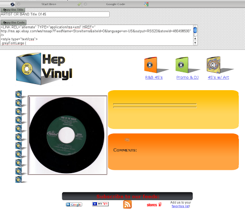
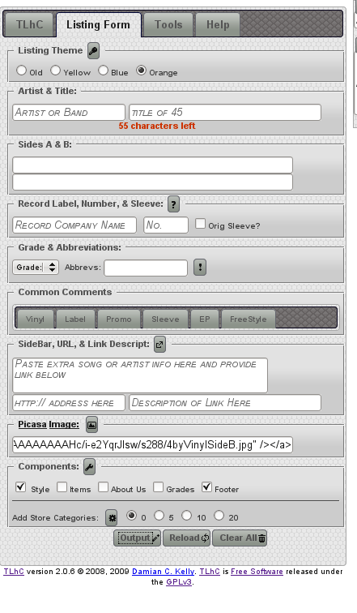

|
|
|
TLhC (TurbloLister HTML Cheater) is an application designed to help easily produce consistent looking ebay listings for similar items where information is commonly reused. TLhC combines a powerful database and professional looking templates to quickly create HTML code for auction listings.
A listing is created by entering item information into a form. A preview is generated immediately and edits can be made very simply within the same window. The resulting auction listing code is ready to be pasted into TurboLister.
TLhC in its current release is customized for selling 45 RPM record singles. It can be customized to sell anything and example code and documentation is included. TLhC comes with several professional looking templates to keep your Ebay store looking sharp. Documentation for creating your own templates is included.
TLhC was designed as a template companion to ebay’s TurboLister bulk uploader. Created to simplify generating listings for multiple similar items. It provides a form for item detail input and produces the HTML code needed to upload to ebay. Primarily it makes entering auction item details quick and simple, by combining two main features. TLhC’s most powerful feature is the ability to save and reuse form input data. By using templates it insures a consistent look and feel to your listings and store.
It is currently configured for listing 7” record album singles. Each record listing needs to provide product details in identical categories. TLhC simplifies the creation of each specific listing and removes the repitition of typing the same phrases and can eliminated the constant use of cut and paste. TLhC allows you the ability to choose multiple preloaded details and quickly update the database with new ones.
It can be customized to sell any kind of item where common item details are listed in each auction. For example books. Each auction for a book should included the same common details such as Title, Author, Publisher, ISBN, Publication date, etc, etc. In a listing for a book Many product item description details are reused and repeated in auctions of similar items. Documentation and example code for customizing TLhC is included. The developer’s also offer paid services and contracts for TLhC customization tailored to your specific needs.
A reliable database backend allows common item details to be saved, updated, reused, and selected from customizable fields. The database is updated directly from the product input form. Updates can be made on the fly and ajax technology updates the form without reloading the page or erasing already entered details.
 |
| 45s |
TLhC was originally designed as a free companion application to use with TurboLister. It could also be used with any Ebay bulk item uploader. The HTML can also simply be pasted directly into the Ebay auction creation webpage itself. Modern looking templates are used to maintain the look and feel of each item at the sellers Ebay store.
TLhC provides a quick and easy way to generate large numbers of professional looking auction listings for Ebay.
TLhC is a php application designed to run on a development webserver in the user’s home or office.
[a]
TurboLister was designed as a template companion to ebay’s TurboLister bulk uploader. It provides a form for simply item input and produces the HTML code needed to upload to ebay. Primarily it makes entering auction item details quick and simple. By using templates it also provides a very consistent look and feel to your listings and store.
45 Listing template with item scan included.
It's main function is to automatically generate the contents of online auction listings with a preselected template.
If you've ever used TL frustrations immediately evident.
TLhC was written to eliminate the need to use Turbolister as a template engine or an html editor. The html code generated is poor. Turbolister also loses the formatting of templates quickly. TurboLister templates are inconsistent and difficult to use.
* Other listing managers are also difficult to use and many contain ads.
* Full control over look and feel.
* Professional looking listings
* Powerful modules feature sellers other items
* Advertisement free
* Free & Open Source (license gpl v 3)
* Customization & Support services available. Contract hiring or per project basis.
* Easily add advanced links in your auctions including links to:
your ebay store rss feed.
links to your most common store categories
most recent or random selection of your other items for sale
pricing research tools.
easily change between tlhc tabs without losing user entered information
custom theme design & support contracts available from developers
quickly search for items
Intended to ease the task of typing frequently used item descriptions. A form is used to create listings to ensure formatting is consistent across all items. Each contains uniform look and feel. Multiple listings can be created quickly and put into a batch uploader like TurboLister for publishing.

4. The form is submitted and a preview is generated along with the HTML code for the auction listing.
5. The TLhC code can then be pasted into an auction batch listing application such as TurboLister or directly into eBay.
TLhC generates an item listing as HTML code along with a live preview. A template is selected and the form is populated with the item specifics.
The anatomy of a 45 listing:
Each 45 rpm record single has two main categories to describe the product. The contents of the record and the condition of the item. The first features information about the audio recording. ie Artist, songs, record company, and date of pressing. The second describes the physical condition of the vinyl and sleeve. This is where TLhC becomes valuable. The condition of the record is also known as the grade. Each record is given an overall letter grade to start off. Then more detailed specific comments about the contents and physical record quality are included.
The main TLhC input form has 5 or so main categories. Each unique item detail is manually entered into the main form. Categories to describe the physical condition of the product are chosen from a preloaded in list.
Commonly used item descriptors are entered then saved in a MySQL database. The phrase is immediately added to the form with Ajax. It can then be selected from HTML form elements.
<table style="width:194px;"><tr><td align="center" style="height:194px;background:url(https://picasaweb.google.com/s/c/transparent_album_background.gif) no-repeat left"><a href="https://picasaweb.google.com/117984535952369497366/45s?authuser=0&feat=embedwebsite"><img src="https://lh3.googleusercontent.com/-9CtyZKoQmrA/SL-Hnnrm8fE/AAAAAAAAE4I/u8HHKuTrh2A/s160-c/45s.jpg" width="160" height="160" style="margin:1px 0 0 4px;"></a></td></tr><tr><td style="text-align:center;font-family:arial,sans-serif;font-size:11px"><a href="https://picasaweb.google.com/117984535952369497366/45s?authuser=0&feat=embedwebsite" style="color:#4D4D4D;font-weight:bold;text-decoration:none;">45s</a></td></tr></table>
[a]Damian Kelly:
Blank template orange